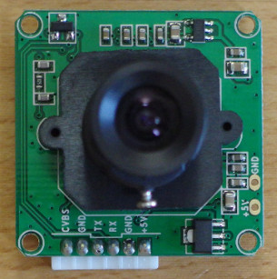
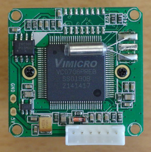
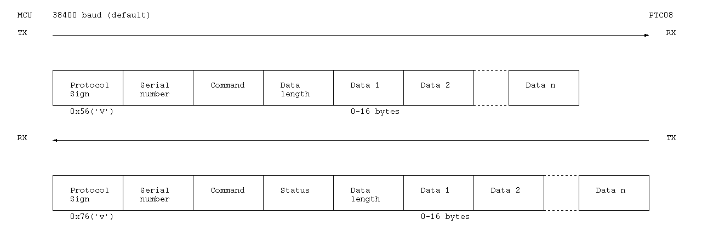

Putal PTC08
(Adafruit TTL serial JPEG camera with NTSC video #397)
The PTC08 is a serial camera module with 640x480 JPEG output. It has an asynchronous serial communication interface. It use the VC0706 controller.


UART interface

Command
| Command | Code | Command | Code | |
|---|---|---|---|---|
| GEN_VERSION | 0x11 | COLOR_STATUS | 0x3D | |
| SET_SERIAL_NUMBER | 0x21 | POWER_SAVE_CTRL | 0x3E | |
| SET_PORT | 0x24 | POWER_SAVE_STATUS | 0x3F | |
| SYSTEM_RESET | 0x26 | AE_CTRL | 0x40 | |
| READ_DATA | 0x30 | AE_STATUS | 0x41 | |
| WRITE_DATA | 0x31 | MOTION_CTRL | 0x42 | |
| READ_FBUF | 0x32 | MOTION_STATUS | 0x43 | |
| WRITE_FBUF | 0x33 | TV_OUT_CTRL | 0x44 | |
| GET_FBUF_LEN | 0x34 | OSD_ADD_CHAR | 0x45 | |
| SET_FBUF_LEN | 0x35 | DOWNSIZE_CTRL | 0x54 | |
| FBUF_CTRL | 0x36 | DOWNSIZE_STATUS | 0x55 | |
| COMM_MOTION_CTRL | 0x37 | GET_FLASH_SIZE | 0x60 | |
| COMM_MOTION_STATUS | 0x38 | ERASE_FLASH_SECTOR | 0x61 | |
| COMM_MOTION_DETECTED | 0x39 | ERASE_FLASH_ALL | 0x62 | |
| MIRROR_CTRL | 0x3A | READ_LOGO | 0x70 | |
| MIRROR_STATUS | 0x3B | SET_BITMAP | 0x71 | |
| COLOR_CTRL | 0x3C | BATCH_WRITE | 0x80 |
Status
| Code | Description |
|---|---|
| 0 | Executing command right. |
| 1 | System don't receive the command. |
| 2 | The data-length is error. |
| 3 | Data format error. |
| 4 | The command can not execute now. |
| 5 | Command received, but executed wrong. |